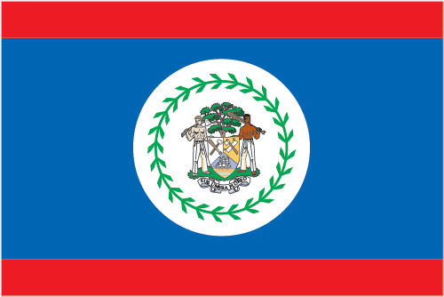
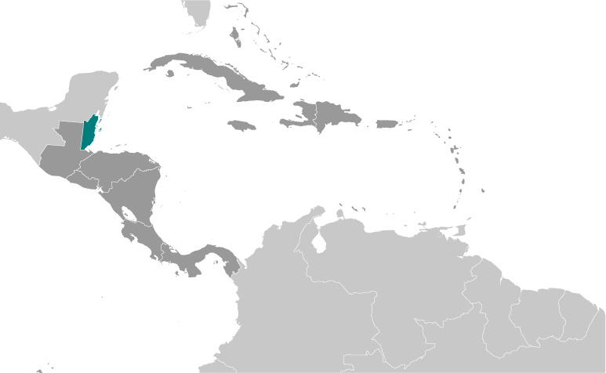
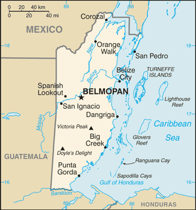

Central America and Caribbean :: BELIZE
Introduction :: BELIZE
-
Belize was the site of several Mayan city states until their decline at the end of the first millennium A.D. The British and Spanish disputed the region in the 17th and 18th centuries; it formally became the colony of British Honduras in 1862. Territorial disputes between the UK and Guatemala delayed the independence of Belize until 1981. Guatemala refused to recognize the new nation until 1992 and the two countries are involved in an ongoing border dispute. Tourism has become the mainstay of the economy. Current concerns include the country's heavy foreign debt burden, high unemployment, growing involvement in the Mexican and South American drug trade, high crime rates, and one of the highest HIV/AIDS prevalence rates in Central America.
Geography :: BELIZE
-
Central America, bordering the Caribbean Sea, between Guatemala and Mexico17 15 N, 88 45 WCentral America and the Caribbeantotal: 22,966 sq kmland: 22,806 sq kmwater: 160 sq kmcountry comparison to the world: 152slightly smaller than Massachusettstotal: 542 kmborder countries (2): Guatemala 266 km, Mexico 276 km386 kmterritorial sea: 12 nm in the north, 3 nm in the south; note - from the mouth of the Sarstoon River to Ranguana Cay, Belize's territorial sea is 3 nm; according to Belize's Maritime Areas Act, 1992, the purpose of this limitation is to provide a framework for negotiating a definitive agreement on territorial differences with Guatemalaexclusive economic zone: 200 nmtropical; very hot and humid; rainy season (May to November); dry season (February to May)flat, swampy coastal plain; low mountains in southmean elevation: 173 melevation extremes: lowest point: Caribbean Sea 0 mhighest point: Doyle's Delight 1,124 marable land potential, timber, fish, hydropoweragricultural land: 6.9%arable land 3.3%; permanent crops 1.4%; permanent pasture 2.2%forest: 60.6%other: 32.5% (2011 est.)35 sq km (2012)approximately 25% to 30% of the population lives in the former capital, Belize City; over half of the overall population is rural; population density is slightly higher in the north and eastfrequent, devastating hurricanes (June to November) and coastal flooding (especially in south)deforestation; water pollution from sewage, industrial effluents, agricultural runoff; solid and sewage waste disposalparty to: Biodiversity, Climate Change, Climate Change-Kyoto Protocol, Desertification, Endangered Species, Hazardous Wastes, Law of the Sea, Ozone Layer Protection, Ship Pollution, Wetlands, Whalingsigned, but not ratified: none of the selected agreementsonly country in Central America without a coastline on the North Pacific Ocean
People and Society :: BELIZE
-
360,346 (July 2017 est.)country comparison to the world: 177noun: Belizean(s)adjective: Belizeanmestizo 52.9%, Creole 25.9%, Maya 11.3%, Garifuna 6.1%, East Indian 3.9%, Mennonite 3.6%, white 1.2%, Asian 1%, other 1.2%, unknown 0.3%note: percentages add up to more than 100% because respondents were able to identify more than one ethnic origin (2010 est.)English 62.9% (official), Spanish 56.6%, Creole 44.6%, Maya 10.5%, German 3.2%, Garifuna 2.9%, other 1.8%, unknown 0.3%, none 0.2% (cannot speak)note: shares sum to more than 100% because some respondents gave more than one answer on the census (2010 est.)Roman Catholic 40.1%, Protestant 31.5% (includes Pentecostal 8.4%, Seventh Day Adventist 5.4%, Anglican 4.7%, Mennonite 3.7%, Baptist 3.6%, Methodist 2.9%, Nazarene 2.8%), Jehovah's Witness 1.7%, other 10.5% (includes Baha'i, Buddhist, Hindu, Mormon, Muslim, Rastafarian, Salvation Army), unspecified 0.6%, none 15.5% (2010 est.)Migration continues to transform Belize's population. About 16% of Belizeans live abroad, while immigrants constitute approximately 15% of Belize's population. Belizeans seeking job and educational opportunities have preferred to emigrate to the United States rather than former colonizer Great Britain because of the United States' closer proximity and stronger trade ties with Belize. Belizeans also emigrate to Canada, Mexico, and English-speaking Caribbean countries. The emigration of a large share of Creoles (Afro-Belizeans) and the influx of Central American immigrants, mainly Guatemalans, Salvadorans, and Hondurans, has changed Belize's ethnic composition. Mestizos have become the largest ethnic group, and Belize now has more native Spanish speakers than English or Creole speakers, despite English being the official language. In addition, Central American immigrants are establishing new communities in rural areas, which contrasts with the urbanization trend seen in neighboring countries. Recently, Chinese, European, and North American immigrants have become more frequent.Immigration accounts for an increasing share of Belize's population growth rate, which is steadily falling due to fertility decline. Belize's declining birth rate and its increased life expectancy are creating an aging population. As the elderly population grows and nuclear families replace extended households, Belize's government will be challenged to balance a rising demand for pensions, social services, and healthcare for its senior citizens with the need to reduce poverty and social inequality and to improve sanitation.0-14 years: 33.95% (male 62,454/female 59,896)15-24 years: 20.55% (male 37,730/female 36,339)25-54 years: 36.62% (male 66,880/female 65,082)55-64 years: 4.99% (male 8,834/female 9,130)65 years and over: 3.89% (male 6,562/female 7,439) (2017 est.)total dependency ratio: 56.8youth dependency ratio: 50.9elderly dependency ratio: 5.9potential support ratio: 17 (2015 est.)total: 22.7 yearsmale: 22.5 yearsfemale: 22.9 years (2017 est.)country comparison to the world: 1761.8% (2017 est.)country comparison to the world: 5824 births/1,000 population (2017 est.)country comparison to the world: 536 deaths/1,000 population (2017 est.)country comparison to the world: 1640 migrant(s)/1,000 population (2017 est.)country comparison to the world: 74approximately 25% to 30% of the population lives in the former capital, Belize City; over half of the overall population is rural; population density is slightly higher in the north and easturban population: 43.7% of total population (2017)rate of urbanization: 1.93% annual rate of change (2015-20 est.)BELMOPAN (capital) 17,000 (2014)at birth: 1.05 male(s)/female0-14 years: 1.04 male(s)/female15-24 years: 1.04 male(s)/female25-54 years: 1.03 male(s)/female55-64 years: 0.97 male(s)/female65 years and over: 0.89 male(s)/femaletotal population: 1.03 male(s)/female (2016 est.)28 deaths/100,000 live births (2015 est.)country comparison to the world: 116total: 18.9 deaths/1,000 live birthsmale: 21.3 deaths/1,000 live birthsfemale: 16.4 deaths/1,000 live births (2017 est.)country comparison to the world: 85total population: 68.9 yearsmale: 67.3 yearsfemale: 70.6 years (2017 est.)country comparison to the world: 1632.85 children born/woman (2017 est.)country comparison to the world: 5951.4% (2015)5.8% of GDP (2014)country comparison to the world: 1090.77 physicians/1,000 population (2009)1.1 beds/1,000 population (2012)improved:urban: 98.9% of populationrural: 100% of populationtotal: 99.5% of populationunimproved:urban: 1.1% of populationrural: 0% of populationtotal: 0.5% of population (2015 est.)improved:urban: 93.5% of populationrural: 88.2% of populationtotal: 90.5% of populationunimproved:urban: 6.5% of populationrural: 11.8% of populationtotal: 9.5% of population (2015 est.)1.8% (2016 est.)country comparison to the world: 274,300 (2016 est.)country comparison to the world: 107<200 (2016 est.)degree of risk: highfood or waterborne diseases: bacterial diarrhea, hepatitis A, and typhoid fevervectorborne diseases: dengue fever and malarianote: active local transmission of Zika virus by Aedes species mosquitoes has been identified in this country (as of August 2016); it poses an important risk (a large number of cases possible) among US citizens if bitten by an infective mosquito; other less common ways to get Zika are through sex, via blood transfusion, or during pregnancy, in which the pregnant woman passes Zika virus to her fetus (2016)24.1% (2016)country comparison to the world: 604.6% (2015)country comparison to the world: 816.2% of GDP (2013)country comparison to the world: 29total: 13 yearsmale: 13 yearsfemale: 13 years (2015)total: 18.9%male: 12.1%female: 29.6% (2015 est.)country comparison to the world: 56
Government :: BELIZE
-
conventional long form: noneconventional short form: Belizeformer: British Hondurasetymology: may be named for the Belize River, whose name possibly derives from the Maya word "belix," meaning "muddy-watered"parliamentary democracy (National Assembly) under a constitutional monarchy; a Commonwealth realmname: Belmopangeographic coordinates: 17 15 N, 88 46 Wtime difference: UTC-6 (1 hour behind Washington, DC, during Standard Time)6 districts; Belize, Cayo, Corozal, Orange Walk, Stann Creek, Toledo21 September 1981 (from the UK)Battle of St. George's Caye Day (National Day), 10 September (1798); Independence Day, 21 September (1981)previous 1954, 1963 (preindependence); latest signed and entered into force 21 September 1981; amended several times, last in 2012 (2016)English common lawhas not submitted an ICJ jurisdiction declaration; accepts ICCt jurisdictioncitizenship by birth: yescitizenship by descent: yesdual citizenship recognized: yesresidency requirement for naturalization: 5 years18 years of age; universalchief of state: Queen ELIZABETH II (since 6 February 1952); represented by Governor General Sir Colville Norbert YOUNG, Sr. (since 17 November 1993)head of government: Prime Minister Dean Oliver BARROW (since 8 February 2008); Deputy Prime Minister Patrick FABER (since 7 June 2016)cabinet: Cabinet appointed by the governor general on the advice of the prime minister from among members of the National Assemblyelections/appointments: the monarchy is hereditary; governor general appointed by the monarch; following legislative elections, the leader of the majority party or majority coalition usually appointed prime minister by the governor general; prime minister recommends the deputy prime ministerdescription: bicameral National Assembly consists of the Senate (12 seats; members appointed by the governor general - 6 on the advice of the prime minister, 3 on the advice of the leader of the opposition, and 1 each on the advice of the Belize Council of Churches and Evangelical Association of Churches, the Belize Chamber of Commerce and Industry and the Belize Better Business Bureau, and the National Trade Union Congress and the Civil Society Steering Committee; members serve 5-year terms) and the House of Representatives (31 seats; members directly elected in single-seat constituencies by simple majority vote to serve 5-year terms)elections: House of Representatives - last held on 4 November 2015 (next to be held in November 2020)election results: percent of vote by party - UDP 50%, PUP 47.3%, other 2.7%; seats by party - UDP 19, PUP 12highest court(s): Supreme Court of Judicature (consists of the Court of Appeal with the court president and 3 justices, and the Supreme Court with the chief justice and 2 judges); note - in 2010, Belize ceased final appeals in civil and criminal cases to the Judicial Committee of the Privy Council (in London) and acceded to the Caribbean Court of Justicejudge selection and term of office: Court of Appeal president and justices appointed by the governor general upon advice of the prime minister after consultation with the National Assembly opposition leader; justices' tenures vary by terms of appointment; Supreme Court chief justice appointed by the governor-general upon the advice of the prime minister and the National Assembly opposition leader; other judges appointed by the governor-general upon the advice of the Judicial and Legal Services Section of the Public Services Commission and with the concurrence of the prime minister after consultation with the National Assembly opposition leader; judges can be appointed beyond age 65 but must retire by age 75; in 2013, the Supreme Court chief justice overturned a constitutional amendment that had restricted Court of Appeal judge appointments to as short as 1 yearsubordinate courts: Magistrate Courts; Family CourtBelize Progressive Party or BPP [Patrick ROGERS] (formed in 2015 from a merger of the People's National Party, elements of the Vision Inspired by the People, and other smaller political groups)People's United Party or PUP [Johnny BRICENO]United Democratic Party or UDP [Dean Oliver BARROW]National Trade Union Congress of Belize or NTUCB [Floyd NEAL]ACP, AOSIS, C, Caricom, CD, CDB, CELAC, FAO, G-77, IADB, IAEA, IBRD, ICAO, ICC (NGOs), ICRM, IDA, IFAD, IFC, IFRCS, ILO, IMF, IMO, Interpol, IOC, IOM, ITU, LAES, MIGA, NAM, OAS, OPANAL, OPCW, PCA, Petrocaribe, SICA, UN, UNCTAD, UNESCO, UNIDO, UPU, WCO, WHO, WIPO, WMO, WTOchief of mission: Ambassador Francisco Daniel GUTIERREZ (since 21 July 2017)chancery: 2535 Massachusetts Avenue NW, Washington, DC 20008telephone: [1] (202) 332-9636FAX: [1] (202) 332-6888consulate(s) general: Los Angeleschief of mission: Ambassador (vacant); Charge d’Affaires Adrienne GALANEK (since 20 January 2017)embassy: Floral Park Road, Belmopan City, Cayo Districtmailing address: P.O. Box 497, Belmopan City, Cayo District, Belizetelephone: [011] (501) 822-4011FAX: [011] (501) 822-4012royal blue with a narrow red stripe along the top and the bottom edges; centered is a large white disk bearing the coat of arms; the coat of arms features a shield flanked by two workers in front of a mahogany tree with the related motto SUB UMBRA FLOREO (I Flourish in the Shade) on a scroll at the bottom, all encircled by a green garland of 50 mahogany leaves; the colors are those of the two main political parties: blue for the PUP and red for the UDP; various elements of the coat of arms - the figures, the tools, the mahogany tree, and the garland of leaves - recall the logging industry that led to British settlement of Belizenote: Belize's flag is the only national flag that depicts human beings; two British overseas territories, Montserrat and the British Virgin Islands, also depict humansBaird's tapir (a large, browsing, forest-dwelling mammal), keel-billed toucan, Black Orchid; national colors: red, bluename: "Land of the Free"lyrics/music: Samuel Alfred HAYNES/Selwyn Walford YOUNGnote: adopted 1981; as a Commonwealth country, in addition to the national anthem, "God Save the Queen" serves as the royal anthem (see United Kingdom)
Economy :: BELIZE
-
Tourism is the number one foreign exchange earner in this small economy, followed by exports of sugar, bananas, citrus, marine products, and crude oil.The government's expansionary monetary and fiscal policies, initiated in September 1998, led to GDP growth averaging nearly 4% in 1999-2007, however GDP growth slowed to 1% in 2015, and 0% in 2016. Oil discoveries in 2006 bolstered this growth and oil exploration continues, but production has fallen in recent years and future oil revenues remain uncertain and are offset by Belize’s growing imports of refined oil.Although Belize has the third highest per capita income in Central America, the average income figure masks a huge income disparity between rich and poor, and a key government objective remains reducing poverty and inequality with the help of international donors. High unemployment, a growing trade deficit and heavy foreign debt burden continue to be major concerns. Belize faces continued pressure from rising sovereign debt, and a growing trade imbalance.$3.097 billion (2016 est.)$3.082 billion (2015 est.)$2.963 billion (2014 est.)note: data are in 2016 dollarscountry comparison to the world: 187$1.74 billion (2016 est.)-0.8% (2016 est.)2.9% (2015 est.)4.1% (2014 est.)country comparison to the world: 197$8,200 (2016 est.)$8,500 (2015 est.)$8,500 (2014 est.)note: data are in 2016 dollarscountry comparison to the world: 15011.3% of GDP (2016 est.)12.1% of GDP (2015 est.)11.3% of GDP (2014 est.)country comparison to the world: 142household consumption: 72.4%government consumption: 14.9%investment in fixed capital: 22.1%investment in inventories: 0.9%exports of goods and services: 56.6%imports of goods and services: -66.9% (2016 est.)agriculture: 9.7%industry: 14.3%services: 61.8% (2016 est.)bananas, cacao, citrus, sugar; fish, cultured shrimp; lumbergarment production, food processing, tourism, construction, oil0.1% (2016 est.)country comparison to the world: 157120,500note: shortage of skilled labor and all types of technical personnel (2008 est.)country comparison to the world: 181agriculture: 10.2%industry: 18.1%services: 71.7% (2007)11.1% (2016 est.)14.1% (2013 est.)country comparison to the world: 15541% (2013 est.)lowest 10%: NA%highest 10%: NA%revenues: $550 millionexpenditures: $600 million (2016 est.)31.6% of GDP (2016 est.)country comparison to the world: 72-2.9% of GDP (2016 est.)country comparison to the world: 11791.4% of GDP (2016 est.)81.7% of GDP (2015 est.)country comparison to the world: 241 April - 31 March0.6% (2016 est.)-0.9% (2015 est.)country comparison to the world: 749.86% (1 September 2016)10.01% (31 December 2015)country comparison to the world: 249.84% (31 December 2016 est.)10.32% (31 December 2015 est.)country comparison to the world: 83$735.9 million (31 December 2016 est.)$764.3 million (31 December 2015 est.)country comparison to the world: 161$1.475 billion (31 December 2016 est.)$1.437 billion (31 December 2015 est.)country comparison to the world: 163$1.278 billion (31 December 2016 est.)$1.174 billion (31 December 2015 est.)country comparison to the world: 163$NA$-163 million (2016 est.)$-174.7 million (2015 est.)country comparison to the world: 79$442.7 million (2016 est.)$537.9 million (2015 est.)country comparison to the world: 176sugar, bananas, citrus, clothing, fish products, molasses, wood, crude oilBurma 30.7%, US 22.6%, UK 19.3% (2016)$916.2 million (2016 est.)$961.3 million (2015 est.)country comparison to the world: 184machinery and transport equipment, manufactured goods; fuels, chemicals, pharmaceuticals; food, beverages, tobaccoUS 37.2%, China 11.6%, Mexico 10.8%, Guatemala 7% (2016)$376.7 million (31 December 2016 est.)$437.2 million (31 December 2015 est.)country comparison to the world: 151$1.338 billion (31 December 2016 est.)$1.33 billion (31 December 2015 est.)country comparison to the world: 161Belizean dollars (BZD) per US dollar -2 (2016 est.)2 (2015 est.)2 (2014 est.)2 (2013 est.)2 (2012 est.)
Energy :: BELIZE
-
electrification - total population: 100% (2016)248 million kWh (2015 est.)country comparison to the world: 183413 million kWh (2015 est.)country comparison to the world: 1730 kWh (2016 est.)country comparison to the world: 108230 million kWh (2015 est.)country comparison to the world: 90191,000 kW (2015 est.)country comparison to the world: 16452.4% of total installed capacity (2015 est.)country comparison to the world: 1470% of total installed capacity (2015 est.)country comparison to the world: 5128.3% of total installed capacity (2015 est.)country comparison to the world: 7419.4% of total installed capacity (2015 est.)country comparison to the world: 322,000 bbl/day (2016 est.)country comparison to the world: 903,000 bbl/day (2014 est.)country comparison to the world: 660 bbl/day (2014 est.)country comparison to the world: 1006.7 million bbl (1 January 2017 es)country comparison to the world: 9633.05 bbl/day (2014 est.)country comparison to the world: 1103,700 bbl/day (2015 est.)country comparison to the world: 1810 bbl/day (2014 est.)country comparison to the world: 1343,638 bbl/day (2014 est.)country comparison to the world: 1720 cu m (2013 est.)country comparison to the world: 1100 cu m (2013 est.)country comparison to the world: 1590 cu m (2013 est.)country comparison to the world: 700 cu m (2013 est.)country comparison to the world: 930 cu m (1 January 2014 es)country comparison to the world: 117700,000 Mt (2013 est.)country comparison to the world: 173
Communications :: BELIZE
-
total subscriptions: 23,000subscriptions per 100 inhabitants: 6 (July 2016 est.)country comparison to the world: 180total: 227,000subscriptions per 100 inhabitants: 64 (July 2016 est.)country comparison to the world: 182general assessment: above-average system; trunk network depends primarily on microwave radio relaydomestic: fixed-line teledensity of only about 6 per 100 persons; mobile-cellular teledensity approaching 65 per 100 personsinternational: country code - 501; landing point for the Americas Region Caribbean Ring System (ARCOS-1) fiber-optic telecommunications submarine cable that provides links to South and Central America, parts of the Caribbean, and the US; satellite earth station - 8 (Intelsat - 2, unknown - 6) (2016)8 privately owned TV stations; multi-channel cable TV provides access to foreign stations; about 25 radio stations broadcasting on roughly 50 different frequencies; state-run radio was privatized in 1998 (2009).bztotal: 157,735percent of population: 44.6% (July 2016 est.)country comparison to the world: 170
Transportation :: BELIZE
-
number of registered air carriers: 2inventory of registered aircraft operated by air carriers: 28annual passenger traffic on registered air carriers: 935,603annual freight traffic on registered air carriers: 2,463,420 mt-km (2015)V3 (2016)47 (2013)country comparison to the world: 92total: 62,438 to 3,047 m: 1914 to 1,523 m: 2under 914 m: 3 (2017)total: 412,438 to 3,047 m: 1914 to 1,523 m: 11under 914 m: 29 (2013)total: 2,870 kmpaved: 488 kmunpaved: 2,382 km (2011)country comparison to the world: 169825 km (navigable only by small craft) (2011)country comparison to the world: 70total: 247by type: barge carrier 1, bulk carrier 33, cargo 156, chemical tanker 2, liquefied gas 1, passenger/cargo 4, petroleum tanker 9, refrigerated cargo 30, roll on/roll off 10, specialized tanker 1foreign-owned: 152 (Bulgaria 1, China 61, Croatia 1, Estonia 1, Greece 2, Iceland 1, Italy 3, Latvia 9, Lithuania 1, Netherlands 1, Norway 2, Russia 30, Singapore 4, Switzerland 1, Syria 4, Thailand 1, Turkey 16, UAE 3, UK 4, Ukraine 6) (2010)country comparison to the world: 33major seaport(s): Belize City, Big Creek
Military and Security :: BELIZE
-
1.17% of GDP (2016)1.09% of GDP (2015)1.06% of GDP (2014)1.1% of GDP (2013)0.97% of GDP (2012)Belize Defense Force (BDF): Army, BDF Air Wing; Belize Coast Guard; Belize Police Department (2017)18 years of age for voluntary military service; laws allow for conscription only if volunteers are insufficient; conscription has never been implemented; volunteers typically outnumber available positions by 3:1; initial service obligation 12 years (2012)
Transnational Issues :: BELIZE
-
Guatemala persists in its territorial claim to approximately half of Belize, but agrees to the Line of Adjacency to keep Guatemalan squatters out of Belize's forested interior; both countries agreed in April 2012 to hold simultaneous referenda, scheduled for 6 October 2013, to decide whether to refer the dispute to the ICJ for binding resolution, but this vote was suspended indefinitely; Belize and Mexico are working to solve minor border demarcation discrepancies arising from inaccuracies in the 1898 border treatycurrent situation: Belize is a source, destination, and transit country for men, women, and children subjected to forced labor and sex trafficking; the coerced prostitution of women and children by family members has not led to arrests; child sex tourism, involving primarily US citizens, is on the rise; sex trafficking and forced labor of Belizean and foreign women and LGBT individuals occurs in bars, nightclubs, brothels, and domestic service; workers from Central America, Mexico, and Asia may fall victim to forced labor in restaurants, shops, agriculture, and fishingtier rating: Tier 3 – Belize does not comply fully with the minimum standards for the elimination of human trafficking and is not making significant efforts to do so; authorities did not initiate any new trafficking investigations of prosecutions, and cases from previous years remain pending; law enforcement efforts to use informal means to identify and refer victims were ineffective and draft procedures for referring victims to services are still not finalized; trafficking victims were more commonly arrested, detained, or deported based on immigration violations than provided with assistance; the government did not make progress in implementing the 2012-14 anti-trafficking national strategic plan (2015)major transshipment point for cocaine; small-scale illicit producer of cannabis, primarily for local consumption; offshore sector money-laundering activity related to narcotics trafficking and other crimes